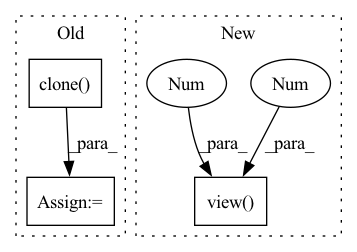

Pattern ID :36997
Before Change
-1, 1
) // for numerical stability
with torch.no_grad():
origin_cos = cos_theta.clone()
target_logit = cos_theta[torch.arange(0, embbedings.size(0)), label].view(-1, 1)
sin_theta = torch.sqrt(1.0 - torch.pow(target_logit, 2))
cos_theta_m = (After Change
if is_half:
cos_theta_m = cos_theta_m.half()
index = torch.zeros_like(cos_theta)
index.scatter_(1, label.data.view(-1 , 1 ) , 1)
index = index.byte().bool()
output = cos_theta * 1.0
output[index] = cos_theta_m[index]In pattern: SUPERPATTERN
Frequency: 5
Non-data size: 3
Instances Fragment ID: 105246223
Project Name: cavalleria/cavaface
Commit Name: 98a21048f5dce435a6639a288dafc4c6be61be05
Time: 2021-08-25
Author: 605370459@qq.com
File Name: head/metrics.py
M Class Name: ArcFace
N Class Name: ArcFace
M Method Name: forward(3)
N Method Name: forward(3)
M Parent Class: nn.Module
N Parent Class: nn.Module
M File Name: head/metrics.py
N File Name: head/metrics.py
M Start Line: 81
M End Line: 103
N Start Line: 67
N End Line: 86
Before Change
new_bpr = metric(anchors)[0]
if new_bpr > bpr: // replace anchors
anchors = torch.tensor(anchors, device=m.anchors.device).type_as(m.anchors)
m.anchor_grid[:] = anchors.clone() .view_as(m.anchor_grid) // for inference
m.anchors[:] = anchors.clone().view_as(m.anchors) / m.stride.to(m.anchors.device).view(-1, 1, 1) // loss
check_anchor_order(m)
print(f"{prefix}New anchors saved to model. Update model *.yaml to use these anchors in the future.")After Change
bpr = (best > 1. / thr).float().mean() // best possible recall
return bpr, aat
anchors = m.anchors.clone() * m.stride.to(m.anchors.device).view(-1 , 1, 1 ) // current anchors
bpr, aat = metric(anchors.cpu().view(-1, 2))
print(f"anchors/target = {aat:.2f}, Best Possible Recall (BPR) = {bpr:.4f}", end="")
if bpr < 0.98: // threshold to recompute Fragment ID: 105246229
Project Name: ultralytics/yolov5
Commit Name: 9d75e42f9811718a1f5a821f2425484524df074f
Time: 2021-10-11
Author: njebastin10@gmail.com
File Name: utils/autoanchor.py
M Class Name: AnonimousClass
N Class Name: AnonimousClass
M Method Name: check_anchors(4)
N Method Name: check_anchors(4)
M Parent Class:
N Parent Class:
M File Name: utils/autoanchor.py
N File Name: utils/autoanchor.py
M Start Line: 31
M End Line: 57
N Start Line: 30
N End Line: 44
Before Change
true_score = row[idx]
// remove current label from scores
row = row.clone()
row[idx] = float("-Inf")
// follow LibKGE protocol for ranking and ties
rank = int(torch.sum(row > true_score, dtype=torch.long))After Change
idx = 0 if direction == "s" else 2
targets = test_spo[:, idx].long()
arange = torch.arange(len(targets), dtype=torch.long, device="cpu")
true_scores = scores[arange, targets].view(-1 , 1 )
// remove the true subjects/objects from the scores so they don"t factor in rankings
scores = scores.clone()
scores[arange, targets] = float("-Inf") Fragment ID: 105246227
Project Name: tsafavi/codex
Commit Name: 3dddca246e4fb616cef251bafb32dac648e8eedb
Time: 2020-07-08
Author: tsafavi@umich.edu
File Name: scripts/baseline.py
M Class Name: AnonimousClass
N Class Name: AnonimousClass
M Method Name: evaluate_rankings(5)
N Method Name: evaluate_rankings(5)
M Parent Class:
N Parent Class:
M File Name: scripts/baseline.py
N File Name: scripts/baseline.py
M Start Line: 129
M End Line: 151
N Start Line: 129
N End Line: 148
Before Change
if query_num is None:
query_num = self.query_num
sigma = self.sigma
seq = [X.clone() ]
if self.grad_method == "nes":
for i in range(query_num // 2):
noise = torch.normal(mean=0.0, std=1.0, size=X.shape, device=X.device)After Change
elif self.grad_method == "sgd":
seq.append(noise)
elif self.grad_method == "hess":
noise = self.hess.mm(noise.view(-1 , 1 ) ).view(X.shape)
seq.append(noise)
elif self.grad_method == "zoo":
raise NotImplementedError(self.grad_method) Fragment ID: 105246222
Project Name: ain-soph/trojanzoo
Commit Name: bc3d366258b45942115b6b86ae8466dac52ac154
Time: 2020-06-30
Author: ain-soph@live.com
File Name: trojanzoo/optim/pgd.py
M Class Name: PGD
N Class Name: PGD
M Method Name: gen_seq(3)
N Method Name: gen_seq(3)
M Parent Class: Optimizer
N Parent Class: Optimizer
M File Name: trojanzoo/optim/pgd.py
N File Name: trojanzoo/optim/pgd.py
M Start Line: 152
M End Line: 174
N Start Line: 154
N End Line: 178
Before Change
if self.training:
prob = F.log_softmax(concat_feats, dim=1)
ord_prob = x.clone()
ord_prob[:, 0::2, :, :] = prob[:, 0, :, :, :]
ord_prob[:, 1::2, :, :] = prob[:, 1, :, :, :]
return ord_prob
After Change
// reimplementation for fast speed.
x = x.view(-1 , 2 , ord_num, H, W)
if self.training:
prob = F.log_softmax(x, dim=1).view(N, C, H, W)
return prob
Fragment ID: 105246233
Project Name: dontlovebugs/superviseddepthprediction
Commit Name: a29756ee2e089a313d149f6fa3ea441d955e42a0
Time: 2020-05-04
Author: wangxin_buaa@163.com
File Name: dp/modules/decoders/OrdinalRegression.py
M Class Name: OrdinalRegressionLayer
N Class Name: OrdinalRegressionLayer
M Method Name: forward(2)
N Method Name: forward(2)
M Parent Class: nn.Module
N Parent Class: nn.Module
M File Name: dp/modules/decoders/OrdinalRegression.py
N File Name: dp/modules/decoders/OrdinalRegression.py
M Start Line: 28
M End Line: 45
N Start Line: 26
N End Line: 57